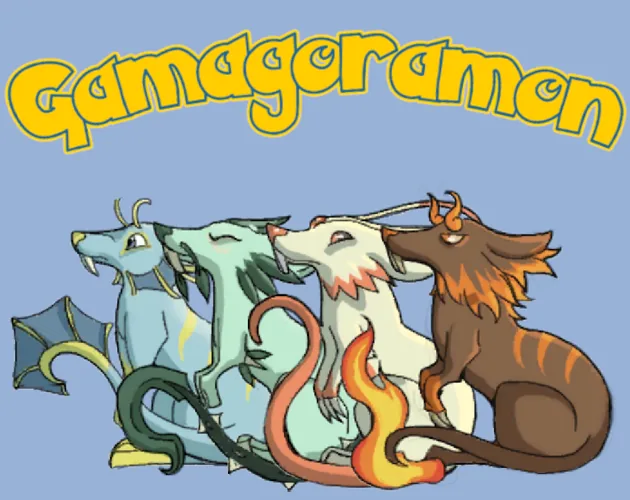
Gamagoramon est un jeu de type Pokémon-like simplifié : le but est de remporter le plus de combats possible avec son équipe de monstres générée aléatoirement, tout comme celle de chaque équipe adverse.
Le jeu se base sur une boucle de combat simple. Dans Pokémon, les monstres ont 6 types de statistiques différentes :
Ici, je les ai réduites à seulement 3 statistiques principales :
Cela permet de simplifier les calculs lors des combats tout en gardant une certaine profondeur stratégique notamment avec l'affinité des types :
Chaque monstre possède 3 attaques différentes, à savoir l'attaque normale, l'attaque élémentaire de son type (sauf pour le type normal) et une attaque spéciale parmi ces 3 choix :
Le joueur doit donc utiliser son équipe de monstres qui, étant générée aléatoirement, aura des avantages ou non contre les équipes adverses.
Dans le code, j'ai créé une classe globale Trainer qui gère les équipes de monstres du joueur et des ennemis. Ces équipes sont générées aléatoirement en créant des objets dans la liste provenant de la classe Monster qui contient les différentes informations du monstre selon son préfab (sprite, type, nom...). Les statistiques sont définies en fonction du niveau : si par exemple la vie par niveau est de 4 et que le monstre est niveau 5 alors il aura 20 PV, de même pour les autres stats.
La génération aléatoire pour l'équipe ennemie va aussi passer par une fonction qui va définir le niveau en fonction du nombre de combats déjà gagnés par le joueur et par rapport au niveau de chaque monstre de sa liste pour que l'équipe ennemie soit générée de manière cohérente.
Le système de combat se base sur une boucle qui va alterner entre le tour du joueur et celui de l'ennemi jusqu'à ce que tous les monstres d'une équipe soient mis K.O. Chaque action (attaque, soin, parade, switch) est gérée par des fonctions spécifiques qui mettent à jour les statistiques en conséquence et vérifient l'état des équipes après chaque action. À chaque K.O. d'un monstre ennemi, le monstre du joueur actuellement sur le terrain gagne un niveau pour renforcer ses statistiques.
Il y a également un menu pour changer de monstre, pour utiliser des objets de soin ou pour fuir le combat et retourner au menu principal.
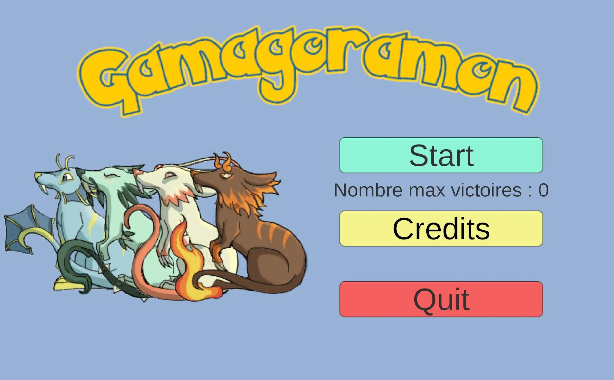
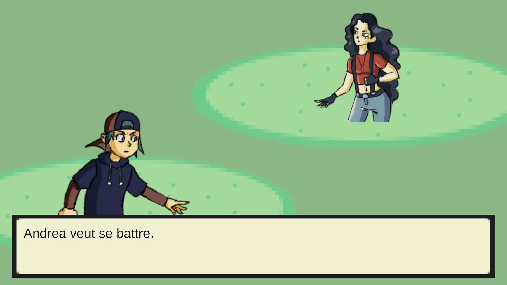
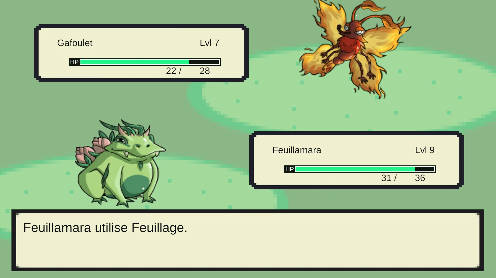
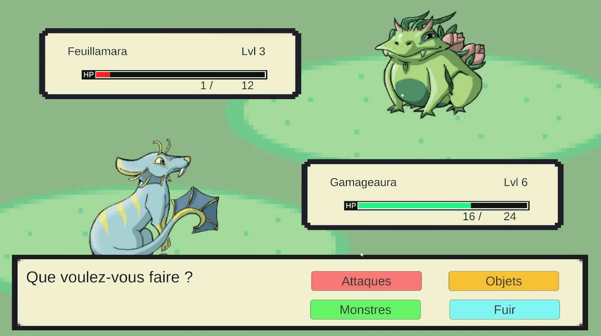
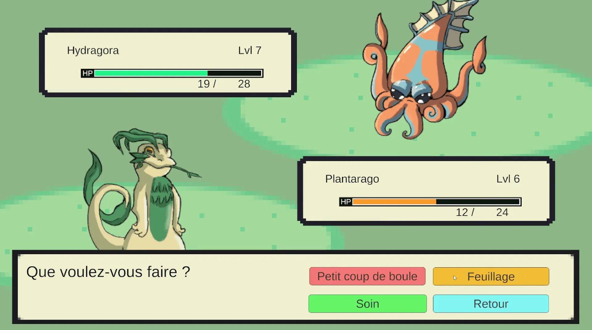
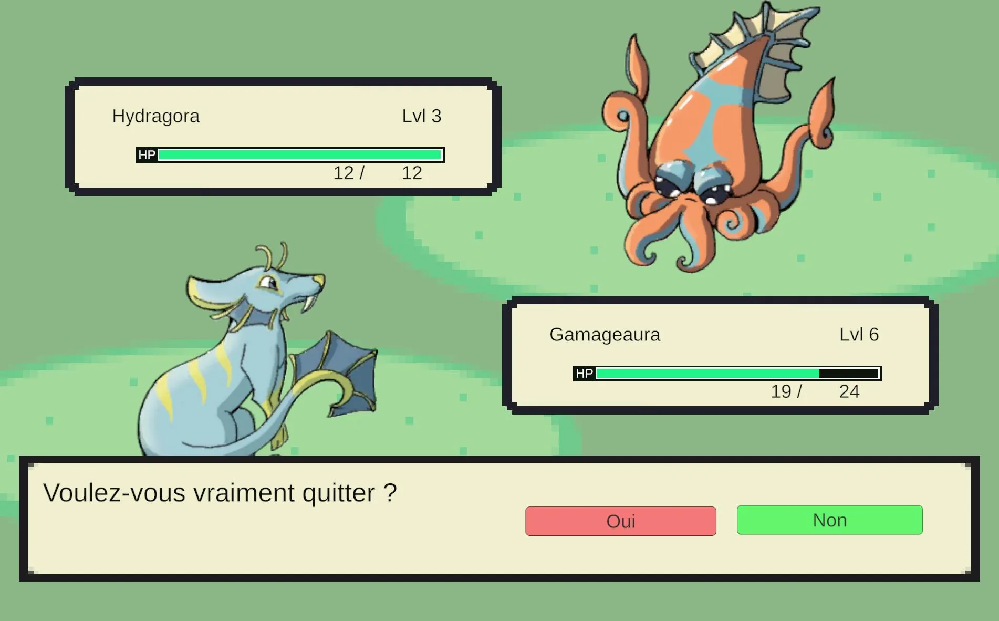
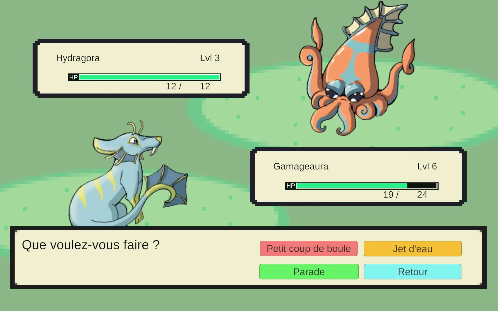
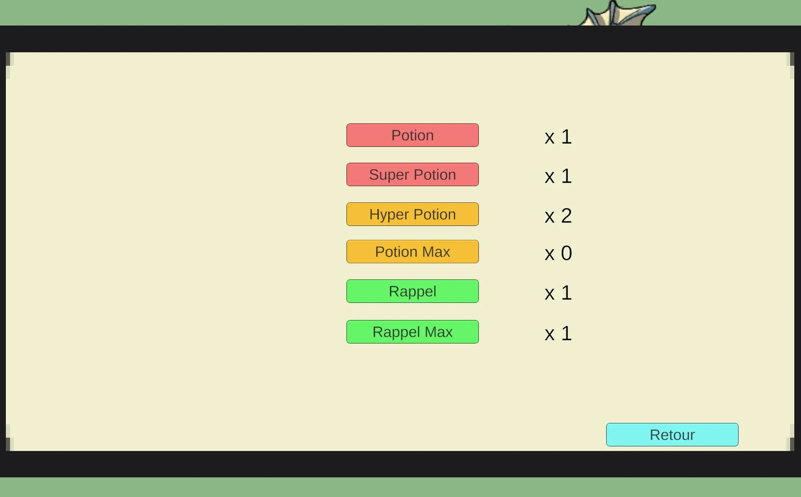
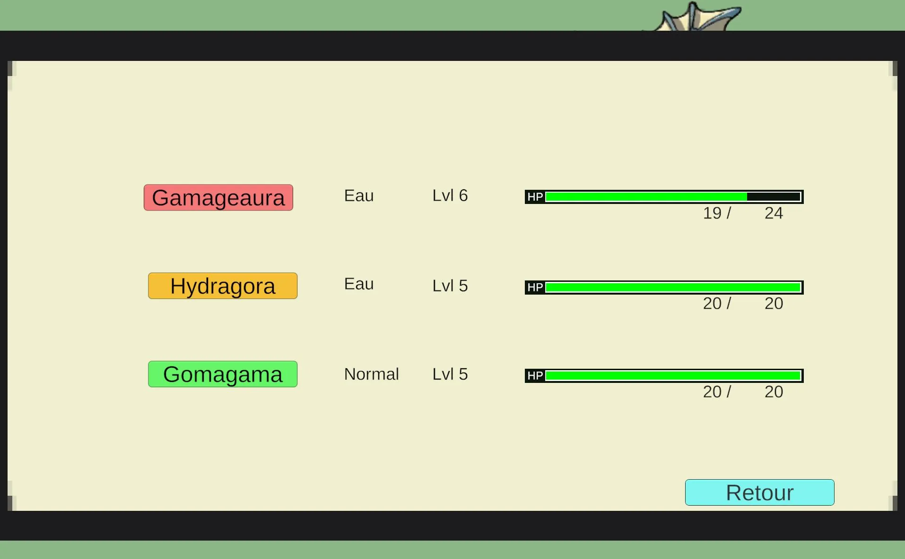
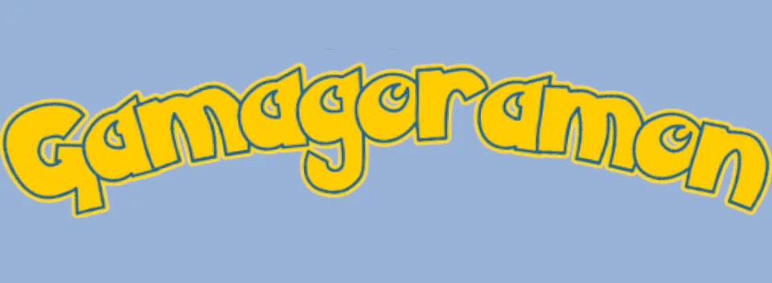
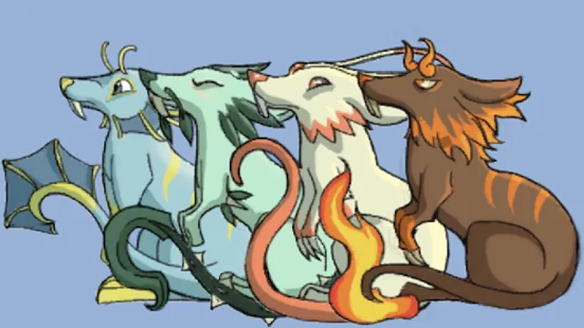
Le jeu dans l'ensemble permet d'enchaîner des combats aléatoires par le biais de la génération d'équipe, ce qui offre de la rejouabilité malgré la simplicité du gameplay. Le système de combat est fonctionnel avec des stratégies simples à mettre en place et des objets utilisables afin de remporter le plus de combats possible.
Ce projet m'a permis de renforcer mes acquis en C# et sur Unity, notamment sur la gestion des classes et de l'orienté objet. J'ai aussi pu approfondir mes compétences en conception de systèmes de jeu, notamment sur la gestion des données des monstres et des dresseurs pour que toutes les fonctions soient opérationnelles lors de la lecture et de la modification de ces données. Cela m'a également permis de bien travailler en groupe sur la gestion des branches Git et la répartition des tâches.